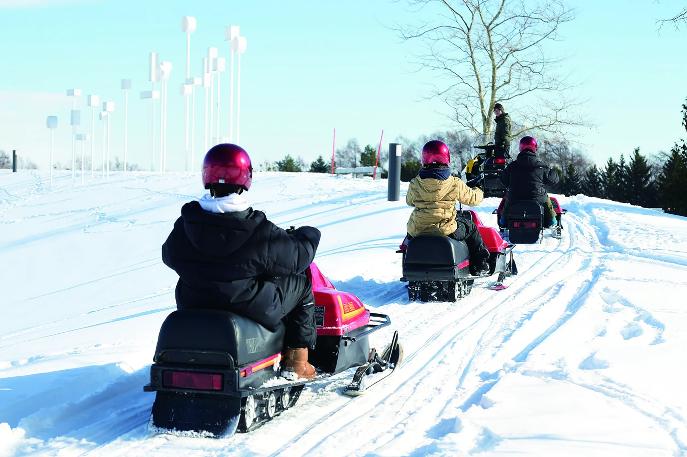
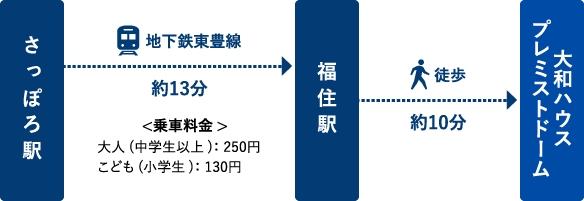
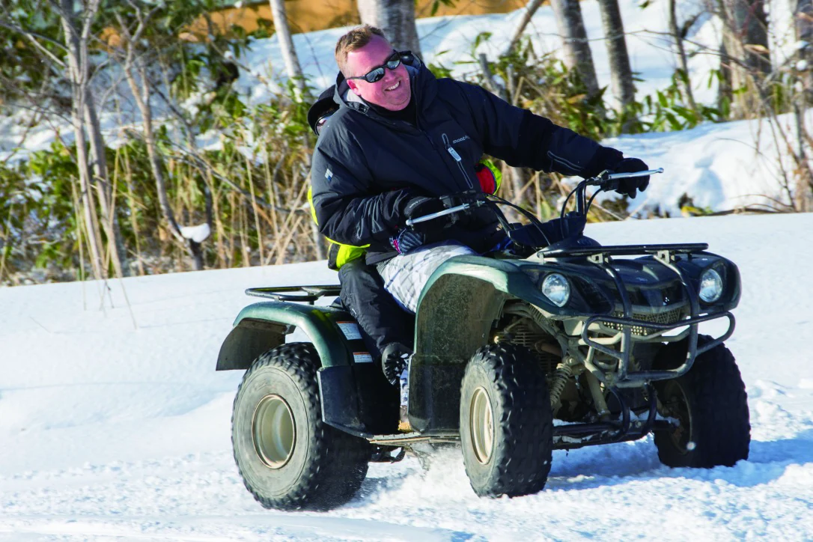
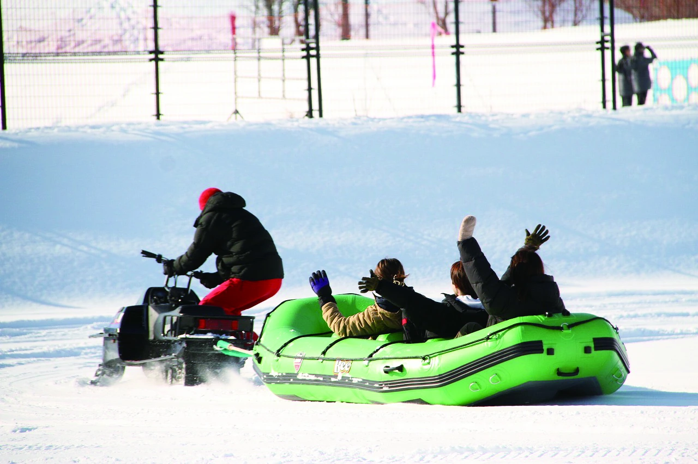
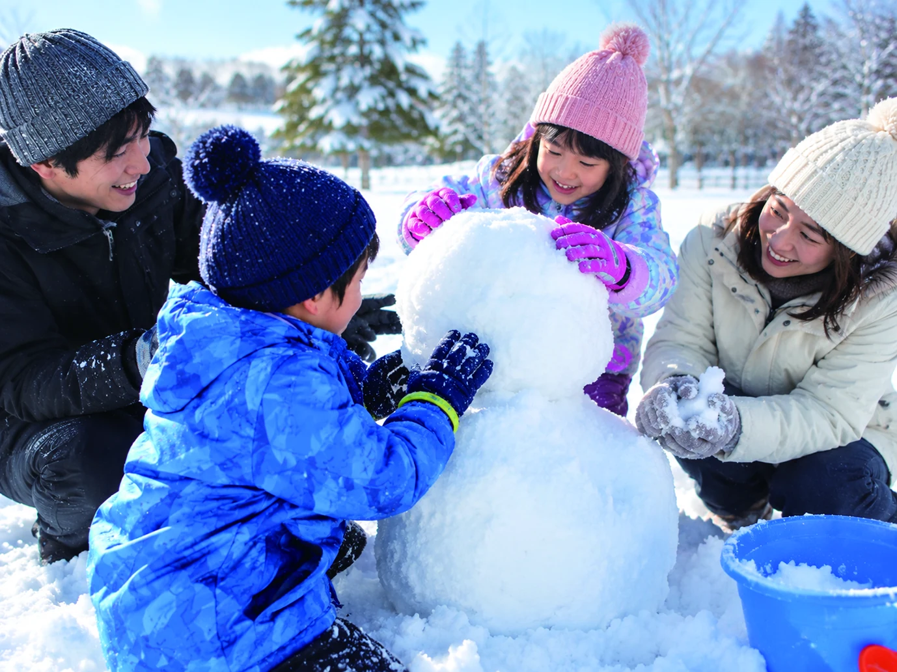
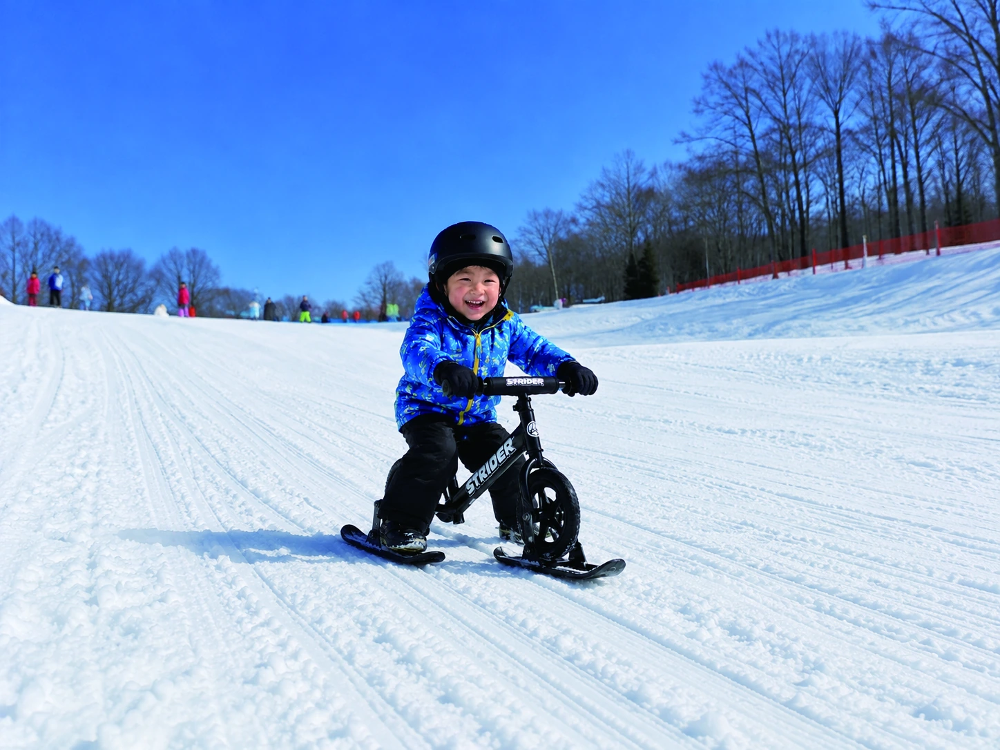
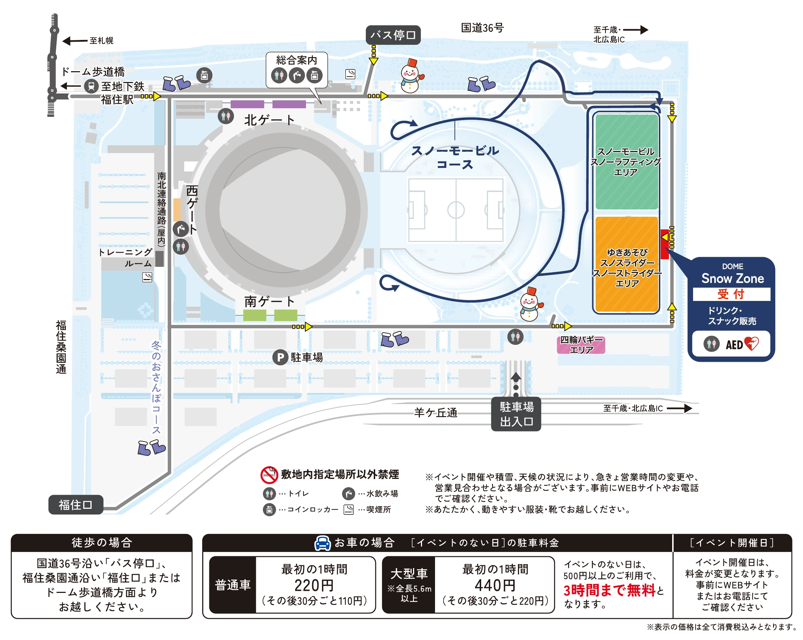

RECOMMENDEDGUIDED TOUR
スノーモービルツアー
インストラクター先導のもと、ドームの広大な銀世界を走行するエキサイティングなスノーモービルツアー！運転免許不要のアクティビティです。
- 所要時間
- 30分
- 1人乗り
- 11,000円 （18歳以上）
- 2人乗り
- 16,500円 （運転者20歳以上、同乗者は年齢制限なし）
WINTER EVENT AT PREMIST DOME
白銀の世界を遊び尽くす、冬の体験。
2026年12月19日（土）〜2027年2月28日（日）
10:00〜16:00 ※積雪・イベント状況により変更あり
ACCESS
市街地からアクセスしやすい、冬限定の雪あそびスポット。
大和ハウス プレミストドームへのアクセスには、地下鉄東豊線をご利用ください。
「さっぽろ駅」から終点の「福住駅」まで約13分。
福住駅の3番出口から徒歩約10分です。

SNOW ACTIVITY
雪原を駆ける体験から、家族で楽しめる雪上アクティビティまで。

RECOMMENDEDGUIDED TOUR
インストラクター先導のもと、ドームの広大な銀世界を走行するエキサイティングなスノーモービルツアー！運転免許不要のアクティビティです。

SNOW RIDE
インストラクターの指導を受けながら、雪原を走る四輪バギー。

SNOW RIDE
スノーモービルで引かれるボートに乗って、雪上を走るアクティビティです。スノーラフティングとバナナボートをお楽しみいただけます。
SNOW PARK
入場料：一般 2,200円 ／ 小学生以下 無料 ※対象者の割引・団体料金は下記「料金」をご確認ください。
スケールアップした斜面で、チューブ滑りやそり滑りを楽しめます。
ゴムチューブ・プラスチックそりは無料貸出（数量限定）。安全に遊べるものは持ち込みも可能です。

雪だるまづくりやバブルボール／サイバーホイールなど、さまざまな雪あそびを楽しめるエリアです。
※別途有料コンテンツがあります。個別の料金・利用条件は主催者へご確認ください。

専用のアタッチメントを付けたランニングバイクで雪上を走る遊び。対象年齢は2〜7歳（目安）。持ち込みも可能です。
※有料レンタル：20分 500円。
PRICE
| スノーモービル（1人乗り）18歳以上 | 11,000円 |
|---|---|
| スノーモービル（2人乗り）運転者20歳以上／同乗者は年齢制限なし | 16,500円 |
| スノーラフティング・バナナボート（中学生以上） | 1,500円 |
| スノーラフティング・バナナボート（小学生以下） | 1,000円 |
| 四輪バギー（1人乗り）16歳以上 | 3,000円 |
| 四輪バギー（2人乗り）運転者20歳以上／同乗者16歳以下 | 4,500円 |
| 一般 | 2,200円 |
|---|---|
| 北海道在住の方 | 1,100円 |
| 団体（15名以上） | 1,980円 |
| 小学生以下 | 無料 |
※北海道在住の方は居住地・年齢を確認できるものをご持参ください。展望台入場割引券付きです。割引適用条件は予約画面・主催者の最新案内をご確認ください。
| レンタルウエア上下（2時間） | 3,000円 |
|---|---|
| スノーストライダー（20分） | 500円 |
※数量限定。手袋・靴・帽子の貸出はありません。
駐車料金およびご利用方法は、日程によって異なります。
イベント開催日には、当日払いが可能な日と、事前に駐車券の購入が必要な日があります。
ご来場前に必ず公式ドームカレンダーをご確認ください。
公式ドームカレンダー※表示価格は税込です。料金・営業内容は変更となる場合があります。ご予約前に最新の情報をご確認ください。
BOOKING
ご希望の商品をお選びください。
VENUE MAP
受付、各アクティビティエリア、場内ルートや駐車場をご案内します。

INFORMATION
開催期間・営業日・体験内容は天候や積雪状況、ドームでのイベント等により変更になる場合があります。
最新の情報は主催者のご案内をご確認ください。